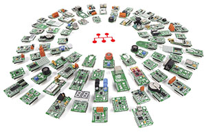

Expandability
Additional functionality can be added to the BrainPad through its expansion headers. This can be done through a plug-and-play click modules or by direct wiring.
Plug-and-play Click Modules
This is an easy option as these modules simply plug in. There are hundreds of available options https://shop.mikroe.com/click

This page covers further details on the click modules
Advanced users can add any of the available modules. However, there are courses that cover specific modules and include all the needed drivers.
Direct Wiring
This option is only recommended for advanced users with electronics background.

As a demo, we built this robot with a chassis we ordered from Amazon http://a.co/dwzywoI The continuous servo motors simply plug in. Pay attention to wires, where the orange wire should be connected to the pin labeled with ~. We then used a breadboard with an ultrasonic distance sensor. This will be used to detect objects, to back up the robot.
BrainPad.ServoMotors.ServoOne.ConfigureAsContinuous(false);
BrainPad.ServoMotors.ServoTwo.ConfigureAsContinuous(true);
BrainPad.Display.DrawSmallTextAndShowOnScreen(0, 20, "Press Left");
while (BrainPad.Buttons.IsLeftPressed() == false)
{
// Beep
BrainPad.Buzzer.Beep();
BrainPad.Wait.Seconds(0.3);
}
BrainPad.Display.ClearScreen();
BrainPad.Display.DrawSmallTextAndShowOnScreen(40, 20, "Go!");
//BrainPad.ServoMotorsIsServoTwoInverted(true);
bool dirrection = true;
BrainPad.ServoMotors.ServoOne.Set(50);
BrainPad.Display.DrawSmallTextAndShowOnScreen(40, 20, "Reflect");
// using reflector
bool use_builtin = true;
if (use_builtin)
{
GpioPulseReaderWriter echolen = new GpioPulseReaderWriter(
GpioPulseReaderWriter.Mode.EchoDuration,
true, 10, BrainPad.Expansion.GpioPin.Mosi,
true, BrainPad.Expansion.GpioPin.Miso);
Move(100, 60);
//dance!
while (true)
{
double l = echolen.Read();
BrainPad.Display.DrawSmallTextAndShowOnScreen(0, 0, l.ToString());
if (l < 600)
{
Move(-100, -100);
BrainPad.Wait.Seconds(1);
Move(-100, 100);
BrainPad.Wait.Seconds(0.5);
Move(100, 60);
}
BrainPad.Wait.Seconds(0.3);
}
}
This other demo video talk about stepper motors and uses the BrainPad.